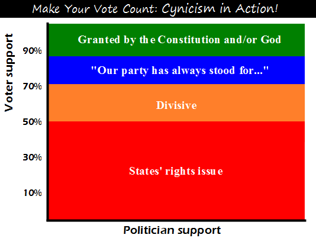

Comic JK 921
When I Feel Like It
⇤
<
?
>
⇥

⇤
<
?
>
⇥
Forum
.
RSS
.
Digg
.
Facebook
.
Reddit
.
Twitter
.
Stumbleupon
Enter your thoughts on number 921 here. Please, no spamming, trolling, phreaking, supporting politicians, following schedules, or expecting people to respect the Constitution. >of all those who claim "x is guaranteed by the Constitution", how many have actually read the actual documents... ? Don't think I get it. Are you saying that x( the level of support from all politicians) is unrelated to y(level of support from voters)? > The left-right isn't an axis. It's just graphing voter support vs. what the politician says about it. >> Shouldn't it be titled: make your words count? >Seconded i'm not understanding this graph at all >>You people are morons. With your vote, you can change a politicos response from "Not my problem" to "Of course we're for that side of that issue... in fact we've always been." >>>Ohhh, now i get it. Thanks. >>> I think the problem is we are all conditioned to read the vertical axis as a function of the horizontal. This seems to be the other way around. In my opinion this isn't a graph - graphs have more than one axis. >It does have 2, one of them is just chromatic instead of spatial. >He should have made it 1 pixel wide to make it more clear. >>Or make it a graph. >>Or at least not drawn both axes as labeled black lines. >>>Second last point. Your mother.... nevermind - I'm sick of seeing you throw tantrums and crying and deleting these. Frankly, it's just sad for a grown man. You know who you are. >I hate deletionists too, but frankly, I wish these "your mother" jokes went TOO INFINITY AND BEYOND!!!!!i¡!!!1!!?$. - and may they stay there and not bother us again >> It's not like it pollutes the entire comment box with large rants. The "your mother" guy tends to try to keep it to a single line near the end (it has the best impact if it's the last word). >>>so does your anus. >>>>cockblock! Awesome! Someone deleted the funny! Now what am I supposed to do? It's nine-o'clock on a Thur-s-day. The regular crowd shuffles in. There's an old man sitting next to me, wondering where the <PROFANITY> today's comic is.... > The artist is busy banging your mother. >> Last person obviously didn't get Piano Man reference, or would have made a better "your mother" joke. >>> Naw, we just don't like Billy Joel. >>>>Son, can you draw me a webcomic? >>>>> Sure, but it will only be slightly better than this one, and the result is people will only make fun of my mother and my crappy jokes, so it's not worth it. >>>>>> ComicJK, is that you? "States rights" is how anyone protests a federal change. There were states who wanted to ban "predatory lending" who were overruled by the Bush admin, and so far as I'm aware, rank and file Republicans didn't utter a peep. (I don't think that giving a loan secured only by the property purchased and at an unusually low rate is a predatory act. The predatory act was letting people misrepresent their income so that Countrywide could profit off the good name of the US at the expense of purchasers of MBSes)